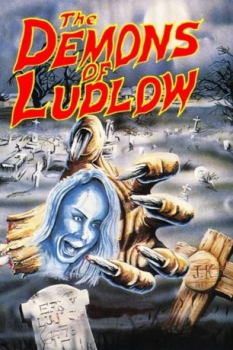

Country:United States, 92 minutes
Spoken languages:English
Genres:Horror
Director(s):Bill Rebane
Writer(s):William Arthur
Video Codec:Unknown
Number: 3005


Certification:
Storyline:
A murderous demon lurks inside an antique piano in a picturesque coastal town.
Cast:

Medium: Bluray,
Comments: Part of: Weird Wisconsin - The Bill Rebane Collection
Loaned: No
Aspect ratio: Unknown